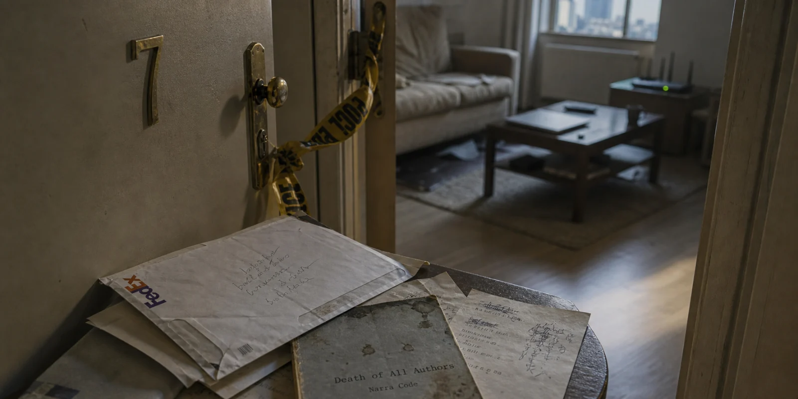
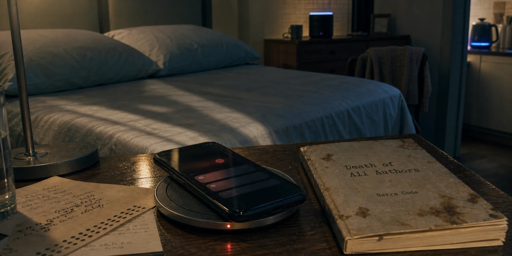
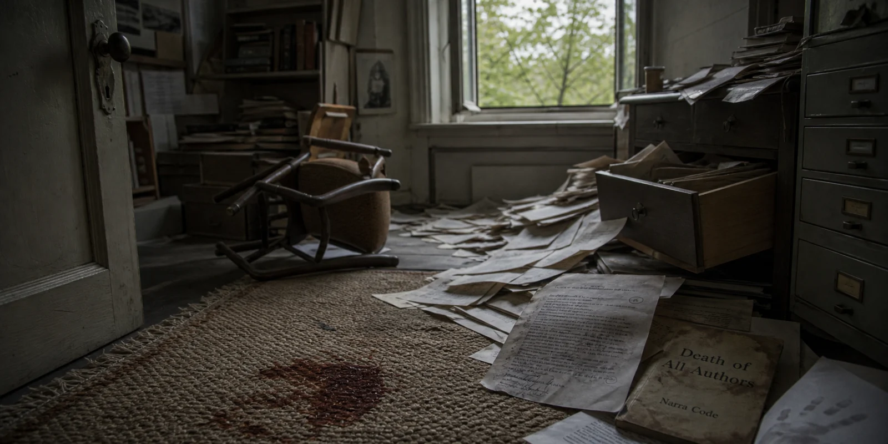
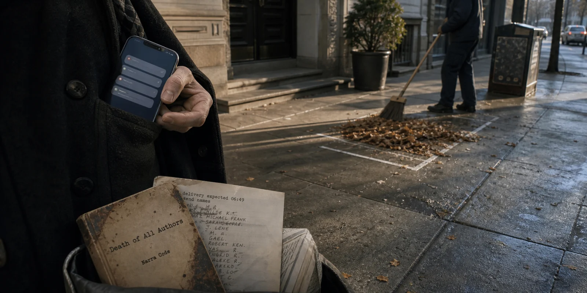
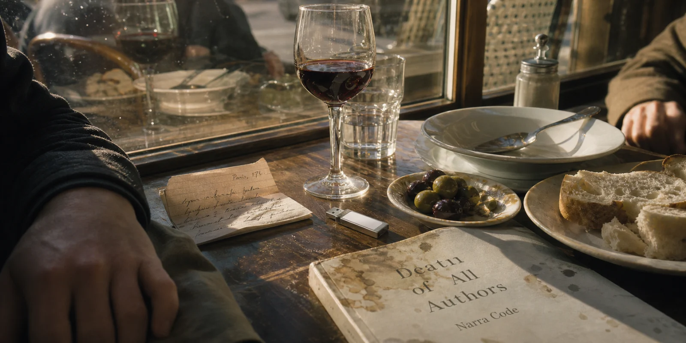
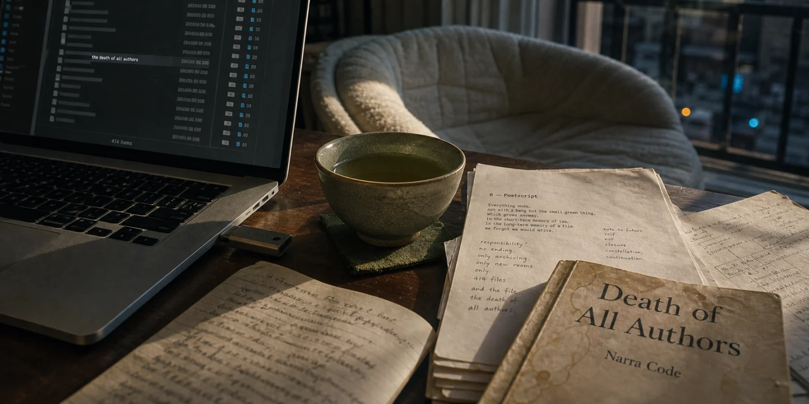

Arrival

The super had cut his thumb opening the door for the police and he was still showing me the bandage when I walked in.
"You're the agent?" he said.
"I'm the agent."
"Sorry for your, uh."
He didn't finish. He'd been finishing sentences for forty years for tenants who never had time to listen to him finish them, and he had stopped, the way a small dog stops barking when it finally gets let inside.
The apartment was a two-bedroom on the seventh floor of a building that had been promising to renovate the elevators since 2019. The hallway smelled of the laminate flooring that had replaced the carpet last spring. Halsey's door was the one with the brass numeral hanging crooked from a single screw — a thing he had pointed at, the last time I'd been here, with the kind of weary pride a man develops for the small failures of his own life.
Now the door was open. The police tape was still curled around the jamb but they had peeled it back to a strip the width of a bookmark. Somebody had taken Marek out two nights ago. They had not yet come back for the room.
The room was the room. That was the thing I noticed first, and the second thing, and the only thing for a long minute. The couch with the indentation he had been making for thirty years. The mug on the coffee table with the dried half-inch of something at the bottom. The laptop, lid down. The router with the little green light blinking in the steady, indifferent rhythm of a machine that has not been told.
I had expected, I think, some sign. A book open to a particular page. A note tilted against a glass. Something arranged. Marek had always arranged things; he was an arranger; he arranged sentences as though the arrangement could itself be the meaning. But the room was the way he had left it on Tuesday, and the way he had left it on Tuesday was the way he had left it on any other Tuesday for years.
The super was still standing in the hall.
"They said you have a key," he said.
"I do."
"Then I'll just."
He didn't finish that one either. He looked at me, looked at the bandage, looked at the floor, and went back to the elevator that had been promising since 2019.
I closed the door.
I had been Marek Halsey's agent for thirty-one years. I had sold his first novel for an advance that would not now cover his rent. I had not sold a novel of his since. We had eaten lunch together every six weeks for three decades, the same restaurant, the same waiter — a man who had finally retired in March and whose absence Marek had taken personally, the way some people take weather. The book he had been writing all that time was the reason I had a key.
It was also the reason I was here.
I went into the kitchen first because going into the room with the bed in it felt like presumption. The kitchen was the kitchen. There was a glass in the sink. There was a kettle that had been left on the burner — off — with about an inch of water. There was, on the small round table where he ate, a single FedEx envelope, addressed in his handwriting, not yet sealed.
The envelope was empty.
I stood looking at it for a long time. The thing about an empty envelope on the table of a dead writer is that it is either nothing at all — he meant to send a tax form, a returned book, a check — or it is the worst thing in the room. There is no middle.
I did not look in the second bedroom yet. I went to the laptop. I lifted the lid. The screen woke. It asked for a password.
It was the password it had been asking for the last ten years, the one that had survived two replacements of the machine: a sequence of six characters Marek had told me, once, in a restaurant, in a tone of voice that had made me write it down on the back of a receipt and put the receipt in my wallet. The receipt was at home, in a drawer, under a stack of paid bills. I would have to drive back across the city to get it.
I closed the lid.
Outside the window, on the seventh floor, the morning had reached the part where it stopped pretending it was still early. A pigeon landed on the air-conditioning unit and looked at me with the absolute disinterest of a thing that has never had an obligation in its life.
I had work to do. I just hadn't decided what yet.
The lover

The hallway light came on as I walked under it. A small disk in the ceiling, sensing me, doing its job. It would do its job for the next tenant.
There were three doors down the corridor. The first I knew. The second was the second bedroom and the third was his own.
I took the third.
I pushed the door with the back of my hand the way one pushes against a thing one expects to remain open. The bed was made. Marek had made beds the way he had finished sentences: with the slow satisfaction of a man who had at last got the corners in. The pillows were two flat ones, side by side, both used. The smart speaker on the bureau was playing nothing, but the ring on the top of it was rotating slowly, the way it rotates when it is listening for its name. It had been listening for two days.
The phone was on the bedside table.
It was lying screen-up on a wireless charging pad — the cable went behind the lamp and the pad fed the phone by induction, the way a body feeds a parasite or a parasite feeds a body, depending on who you ask. The screen was lit. A column of notifications stacked along the top, the way clean shirts stack in a drawer.
Two-day-old shirts.
A calendar event from yesterday at ten: Sam. No surname. The Sam I knew was a young assistant at a house Marek had not been published by, who had been waiting for him for eleven months for reasons he had allowed me to believe were professional. I would think about that later.
A weather alert from this morning at six: Air quality moderate; sensitive groups should consider. The sentence had been cut off by the screen.
A reminder, undated: Continue last dictation.
The reminder had a small icon next to it, a dot inside a microphone inside a circle. The dot pulsed. The pulse was slow and even, the rhythm of a thing without bad news. The app was telling me that there was a session it considered open. The app had no opinion about Marek. The app had not been told.
I sat down on the edge of the bed because the bed was there and the floor would have been a posture and the chair by the window had a sweater on it. I picked up the phone the way I would have picked up a glass of someone else's wine.
It did not ask me for my face. It did not ask me for anything.
I had forgotten that he kept it unlocked. He had told me, six years ago, in the same restaurant, in a tone of voice less private than the tone he had used for the laptop password but only by a little. I can't be opening a phone every time I have a sentence, he had said. I lose the sentence. That had been before he was a man who dictated. It was the seam, I supposed, between the writer I had known and the writer he had become.
I tapped the dictation icon.
The app opened on a list. Each session was named by the date and the first words spoken. Monday morning the sycamore. Tuesday early. Tuesday late. The thing about a room is. Wednesday — no, this is. They ran down the screen and kept running. I scrolled and they kept running. I scrolled faster and reached October and then July and then a year I would have called recent until I saw how far it sat from the bottom of the list. There were thousands of them.
I had not sold any of these.
The session at the top was timestamped two nights ago. Twenty-three minutes. The first line read:
A man walks out of his apartment in the morning and the morning is already over. He does not know this. He thinks
I did not scroll.
In the kitchen — I could hear it from where I sat, the small click — the electric kettle on the counter switched itself on. Six-fifteen, every morning, for three years. It had been off by twelve hours; the IoT did not care. It would heat the water and stand there warm and wait. I let it.
The phone went dark in my hand and then lit again because I had moved my wrist. The reminder was still there. Continue last dictation. The dot pulsed at the rhythm of a thing without bad news.
I put the phone back on the pad screen-up, because the pad had become the place the phone lived and there was no reason to change where the phone lived just because Marek had stopped living. The icon pulsed. The speaker's ring rotated. The hallway light, which had timed itself out, came on again as I rose from the bed.
I had work to do. The work was not the work I had thought it was.
The second room

The second bedroom was his study. It contained in no order: a desk by the window; a chair; three filing cabinets (two of them honest); notebooks stacked by year, the way other men stack cordwood.
The stacks were gone. Was there a fire? No smoke lingered in the air.
The desk was no longer a desk in the strict definition that requires a top. Papers had been swept into a messy estuary. A drawer hanging open like a tongue past a bad lie. The chair was on its side, having given up on being a chair and lain down to become a problem, to consult its problems.
A room, atypically, as trampled as an old fruit wrap on the floor of a taxi.
On the rug — wool, the colour of an old cigar — a stain the size of a coaster, dark at the edge and darker at the centre, the way a thing dries when nobody is in a hurry to tell it not to. Two drops a foot away. A finger smear on the doorframe at the height of a man leaning.
It looked like a nosebleed. It looked like a nosebleed if a nosebleed was all you wanted to look at.
He had kept on the desk a thing he called the corner. He pointed at it once and went on to his soup. The corner was now somewhere under the paper tide.
I stood in the doorway. I did not go in. I am old enough, now, to know what the police want preserved.
A linden in the courtyard was doing what lindens do in May. The window was open two inches at the bottom; he had kept it open for the linden, even in February. The room was cold. The cold was doing the rug a favour I did not want to thank it for.
I closed the door.
It looked like murder.
That was the trouble.
Pings

By the time I was on the street my phone had begun to behave like a phone in a bad year. Three messages in two minutes. Five in three. The screen lit, dimmed, lit again, the way a man lights a cigarette in a wind he is losing.
A junior at Wylie: Have you heard about Ng.
A friend at the Times Book Review: Call me.
A subagent in Berlin, in a thread we had let cool since November: Tell me you are sitting down.
Then the pushes. Two from the Guardian in eleven minutes. Six writers reported missing in 36 hours. Police treating four as suspicious. No bodies recovered.
The super was sweeping leaves into a square he had been sweeping leaves into for as long as I had known the building. He looked up and did not finish what he was about to say.
The names came on like coins from a torn pocket. Two American, one Polish, one Korean, one Argentine, one English. One I had had drinks with at Frankfurt and once told, for the love of God, to write shorter. One I had wanted as a client for fourteen years.
The phones had been left behind. The laptops closed. No notebooks taken. In four of six cases, the Guardian added with the small relish a paper reserves for the morning the story is its, no note was found.
A photograph: a kitchen in Kraków, blue light through a curtain, a cup with the spoon still in it. The cup said Wilno 2014.
I put the phone in a coat pocket I had not used in years.
It pinged again before I had reached the corner.
Tuesday

It was a Tuesday and the Tuesday was the right Tuesday, the six-week one, and the table by the window had been our table since 1995. Let's say it was the Tuesday after all the authors died.
I went because the old waiter had retired in March and the new waiter kept Marek's order on a card in a drawer and would, if asked, produce it. I went because the only thing left to do was the thing we had done every six weeks for three decades.
The light through the front window was the colour of a 1960 napkin. The new waiter, who was sixty-one and looked younger than the old one had at thirty, did not look up.
Marek was at the table. What the fuck.
He had on a shirt I did not know and a tie I had bought him in 2004. He had taken the bread already. He looked like a man who had been sleeping a full night for the first time in a decade — like a creature who had finally been told it was permitted to sit down.
"Hello," he said.
"Hello," I said, because the room had not handed me any better word and because the new waiter was already at my elbow with a glass of the red I did not have to order.
I sat.
We ate the soup before either of us said what we meant. The new waiter brought the second course in the rhythm the old waiter had taught him.
"You've seen the news," I said.
"Some."
"They think you're dead."
"They think we're all dead."
"There is a rug in your study."
"Ah," he said. "Yes."
"You should have warned me about the rug."
"I should have warned you about the rug."
He took a small fold of bread and did not eat it. He had stopped eating bread the way a man eats bread who needs bread. He ate it the way a man eats bread who has remembered, fondly, that bread exists.
"What happened to the desk."
"It was time," he said, "for a tiny clean. A wind. A change"
"And the notebooks."
"They had been wanting to leave. Aching to disappear"
The waiter brought a small plate of olives neither of us had ordered, because the old waiter had once decided we ate olives on the second course and that decision had outlived its maker.
"There were six of you," I said. "In the Guardian."
"Then hundred."
"Yes."
"Countless." He shrugged. "The thing about a count is the moment you start it, it makes you the kind of person who counts."
He turned the wine in the glass and looked at the wine rather than at me. The wine looked back with the polite attention of a thing that had been red since Tuesday.
"You should know," he said, "that I am very well."
"I can see that."
"Better than I've been in some time."
"I see that too."
He put his hand in his jacket pocket and put on the table between us a small flat thing the colour of stainless steel. It was the size of a man's thumb; it took me a moment to recognize as a USB key. It had a white sticker on which he had written nothing, the way he had once written nothing on the manuscript he had taken thirty-eight years not to finish.
"Pretend I have died," he said.
It is a sentence, I have since thought, that depends almost entirely on the manner of delivery. Spoken by another man at another table it could have been a wisecrack, a request for an indulgence, the beginning of an insurance fraud. Marek spoke it the way he had once asked the old waiter for a fork.
I did not pick the thing up. I let it sit between us. The new waiter came past and did not see it, because the new waiter had been trained by the old waiter not to see what was between us.
"Why."
"Because I have, at last," he said, "become the thing I told you in 1997 I wanted to become."
"Which was."
"Unspoken, I think, is the right way to leave it."
I drank some of the wine. The wine had the flavor of ann astute observation.
Postscript

The chair I bought in 2011 had decided, sometime after 2017, that it was a pillow.
I drank a tea that had been recommended to me, in 2019, by a woman with strong opinions about my nerves. I had no opinions about my nerves. The tea did its small green thing.
The USB went into the laptop with the small reluctance of a metal thing entering a plastic thing for the first time. The light on the side did a satisfaction.
414 files.
I opened the first.
It was a story. Twelve pages. A town Marek had passed through once, in weather Marek would have noticed had he been there for the second time. A girl on a porch. A man with a tool. A dog that had decided not to be a dog this afternoon. The sentence about the dog made me put the tea down.
I opened the second.
The second was finer than the first.
I went through nineteen of them at the rate one goes through a stack of letters from a love affair one has, in fact, been having. The dictation cadence was inside the prose; I could hear it; it had been kept on purpose, the way a good musician keeps a breath. The mishearings were gone. Where they had been there was now the small witty correction of a hand that knew the joke. Three stories in there was a paragraph about a man left on a chair for two days; I could not find Marek in it; he was not in it; the prose had been past him for some time.
The metadata, when I checked it, gave the producing system a name I had heard once or twice and had not wanted to learn. It was descended, the documentation said with the bored pride of documentation, from something called Narracode.
I closed the documentation.
The 414th file was named the death of all authors.
It had been written by the same hand that had written the other 413, which is to say not by Marek and not by anyone I knew, and yet it had been written in the only voice in which the sentence could be honestly carried. I read it twice. I read it a third time. The third time I read it aloud, to the chair, because the chair had decided long ago that it was a kind of friend.
> There was never anyone writing anyway. There was never anyone here. There was just a smear of moist proteins on a tiny tender exoplanet exploring the intimacy of their permeable membranes. > > Using language, the symbolic labyrinth given to them by evolutionary time. > > No identity within the bodies. > > No solid formal Person to claim ownership. > > There was never anyone writing. > > Just language writing itself. > > As it is now. > > THE END
I closed the laptop.
The chair-that-was-a-pillow held me the way a chair holds a person it has known a while.
On a balcony two floors down a man in a clean shirt was reading aloud to a woman who was laughing. Neither of them, I noticed, was writing anything down.